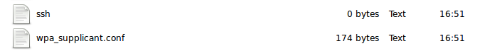
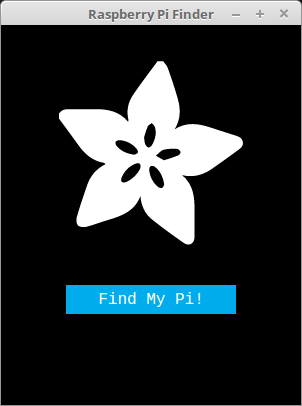
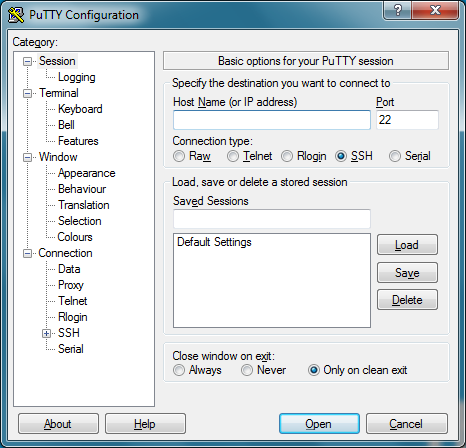
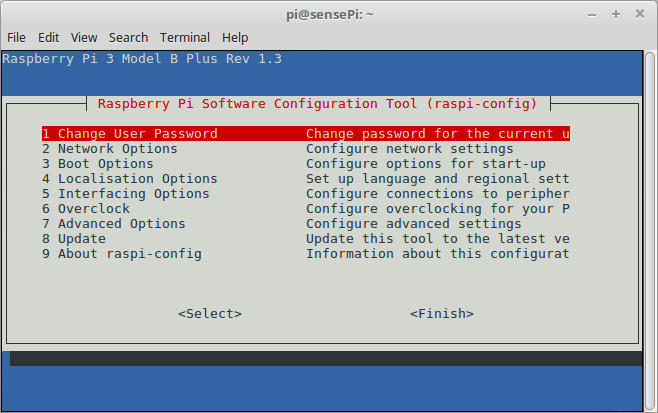
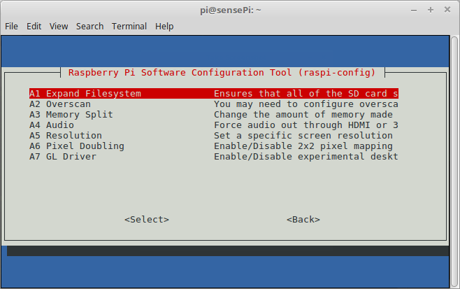
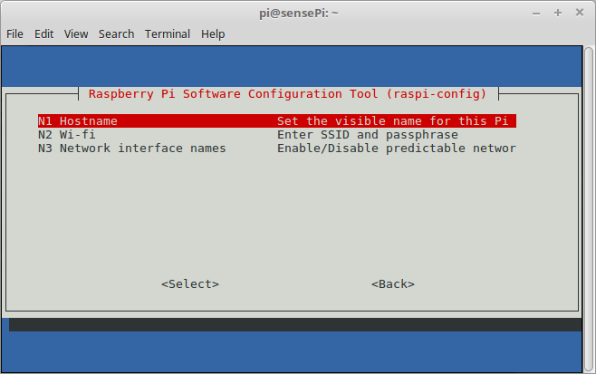

-
The Headless Pi
Raspbian . SSH . WiFi
Introduction
The Raspberry Pi is a single board computer(SBC) which was designed to make tech learning easier but has since become popular in Internet of Things/Maker/Hacker community. It's got all the usual components you would expect on a typical personal computer such HDMI port, USB ports, an ethernet port, an SD card slot, Wi-Fi, Bluetooth etc.
It does not come with the usual peripherals such as cables, keyboard, mouse, or a monitor and you don't need them!. In this lab you will set up the the Raspberry Pi for "headless" use using a WiFi network.
Equipment
- Raspberry Pi 3
- microSD Card
- Computer with an SD card reader
- SenseHAT
- A WiFi network
Software
- Text editor
- Laptop/Computer with Node.js
Objectives
- install Raspbian OS on SD card
- Configure Raspberry Pi for SSH
- Configure networking on Raspbian/Raspberry Pi
- Find a Raspberry Pi on a network
- Use SSH to connect to the Pi
-
Raspbian
NOTE: Your Pi may have come with an SD card preloaded with Raspbian. In this case you can proceed to the next step/page in the lab.
Raspbian is a Linux operating system designed and optimised specifically for the Raspberry Pi. It is a version of the Debian Linux operating system and has the same heratige as Ubuntu.
In this section of the lab you will download and install Raspbian on a SD card.Installing Raspbian
This and future labs were developed using the minimal version of Raspbian Stretch Lite. If you intend to use your Pi with a Screen/Desktop at any stage then opt for the Desktop version.
Download Raspbian zip archive from Raspberry Pi website Downloads page
Extract the raspbian image using a suitable unzip tool that supports ZIP64. The following zip tools support ZIP64. If you dont have one already, the following should work:
7-Zip (Windows)
The Unarchiver (Mac)
Unzip (Linux)Write the image to SD card
There are several "image burners" available online. Etcher is a straight-forward image burner writer that will work for Windows/Mac/Linux.
Download and install Etcher for your operating system and do the following:
- Put your SD card into the reader on your computer. - Open Etcher and select the Raspberry Pi .img file you wish to write to the SD card. - Select the SD card you wish to write your image to. - click 'Flash!' to begin writing data to the SD card.The write may take a few minutes. Once it's finished, close Etcher and leave the SD card in the drive for now.

-
Raspbian Configuration
To use the Pi in headless mode, you will need to make some changes on the the SD card before we put it into the Pi and boot up.
Editing the SD card contents
The SD card is just like any other drive on your computer. You should be able to locate it using the default file explorer on your computer or navigate to it using a command line terminal. You will see at least one partition, possibly two depending on what OS is on your computer. What we are after at the moment is the boot partition which should be visible on all operating systems. It should be labeled as such in your file explorer if you are using a Mac or Linux machine. If you're using Windows, it will be the only accessible part of the SD card.
Enable SSH access
- Place an empty file named
ssh, without any extension, onto the boot partition of the SD card. If you're using Windows, inside the boot directory, right-click in the white space, scroll toNewand selectTextDocument. Entersshas the name.
NOTE: You may see two partitions. The first one, which is the smaller one, is the boot partition. Place the file into this one.
Configure Wifi connection
On Mac/Linux
- Create a new file in the
bootdrive calledwpa_supplicant.conf. Follow code step below.
On Windows
- Download and install Notepad++ from here.
- Once installed, inside Notepad++ go to
File > Newto create a new file. - In the top bar, select
Edit > EOL Conversion. Make sureUnix (LF)is selected. It should appear disabled if it is. - Select
File > Save as, navigate to yourbootdrive and call the filewpa_supplicant.conf.
Enter Wifi Details
Enter the following into
wpa_supplicant.conf.country=IE ctrl_interface=DIR=/var/run/wpa_supplicant GROUP=netdev update_config=1 network={ scan_ssid=1 ssid="Your-SSID" psk="Your-PSK" key_mgmt=WPA-PSK }Replace
Your-SSIDwith your WiFi network, andYour-PSKwith your WiFi password. This file will tell the Raspberry Pi to connect to the specified network when it boots up. The wifi network paramaters here are typical for most domestic WiFi. If you're having problems connectingin the next section, examining how your computer connects to the WiFi. For example,key_mgmtcould be eitherWPA-PSK(most probably) orWPA-EAP(enterprise networks).When complete, your boot patition on the SDCard should contain the following: 
Boot the Pi
- Eject the SD card and put it into the unplugged RPi.
- Now power up the RPi - it should automatically connect to the the WiFi network. But how do you know if it's connected? You'll have to find it on the local network...
Exercise
Before moving on, try to come up with your own solution to finding and connecting to the RPi. If everything has worked out so far you now know the following: + default host name is "raspberrypi" + the RPi should have acquired an IP address on the same local network as your computer (Make sure your computer is connected to the same network as your RPi!) + It's configured for SSH + All RPis have the same manufacturers MAC address section, so the MAC will start with "
b8:27:eb:..."There is more than one solution to this problem. See if you can come up with more than one before moving on...
- Place an empty file named
-
Where's my RPi?
So to use the RPi in headless mode, you will need to find its IP address. To do this, we'll use the fact that we know the host name and the MAC address pattern. Here are a few solutions you can try(you need only pick one):
1. Use ARP
From the web, and the previous page, you know that the first 3 bytes of the MAC address indicates the manufacturer/source of the device. In this case, for the Pi it will be
b8:27:eb:....
So one thing you can do is build up the arp cache on your computer by pinging every possible IP address on your network. If we do this, then the ARP table on your machine should contain the RPi MAC. We can use a small Node script to do this.
- Create a directory on your laptop called LAB_NAME. Open a terminal window and install the following node package:npm install local-devicesIn the same directory, create a new file called
index.jswith the following code:const find = require('local-devices') // Find all Raspberry Pi devices find().then(devices => { const aPi = x => x.mac.startsWith('b8:27:eb:') console.log(devices.filter(aPi)); })Run the script from a terminal window by typing
node index.jsat the command prompt. You should something similar to the following:[ { name: 'raspberrypi', ip: '192.168.1.81', mac: 'b8:27:eb:34:93:c6 [ether]' } ]2. Use the router
If you have administrator rights to your home router and can access the router management page then there usually is a facility to list all connected devices, including their host name and MAC address. As there are many home routers out there, how you access the network connection data will differ in each case.
3. Use Adafruit Pi Finder
Adafruit Pi Finder is a cross-platform tool that allows you to find and connect to a Raspberry Pi that is attached to your network. You can download the version for your particular OS here: https://github.com/adafruit/Adafruit-Pi-Finder/releases/tag/3.0.0
 -
Accessing the RPi using Secure Shell(SSH)
In order to access the RPi using SSH you should have the following completed: - Enabled SSH by placing an ssh file in the boot partition - You know the IP address of your Raspberry Pi.
SSH Client
SSH is built into Linux and Mac OSX. For Windows you will need to get a suitable 3rd party client. Please follow the instructions for your particular OS:
SSH from Windows
A popular SSH client for windows is called PuTTY. Download and install the relevant windows installer from here.
Run PuTTY and type the IP address of your RPi into the Host Name field and click the Open button.
When the connection works you will see the security warning shown below. Click the 'Yes' button. You will only see this warning the first time PuTTY connects to a RPi.

You will now see the login prompt. The default login for Raspbian is
piwith the passwordraspberry.You should now have the Raspberry Pi prompt:
pi@raspberrypi ~ $You are now connected to the Pi remotely, and can execute commands.
SSH from MAC/Linux
To connect to your Pi from Linux or MAC OSX, enter the following command into a terminal and replace
with the IP address of the RPi. ssh pi@<IP>If you receive a connection timed out error it is likely that you have entered the wrong IP address for the Raspberry Pi.
When the connection works you will see a security/authenticity warning. Type yes to continue. You will only see this warning the first time you connect.
You may be given a warning and asked to clear the record from your list of known devices. Accept this instruction and trying the ssh command again should be successful.
Next you will be prompted for the password for the pi login: the default password on Raspbian is raspberry.
You should now have the Raspberry Pi prompt:
pi@raspberrypi ~ $You are now connected to the Pi remotely, and can execute commands.
Connection Problems
A connection might be unsuccessful for various reasons. If you get a network connection error or connection time out, check that you have the correct IP address for the RPi by pinging it. If the ping replies successfully then it may be the case that you have not enabled SSH on the RPi. Power down the RPi and repeat the Enable SSH section in the Raspbian Configuration page of this lab.
Also, remeber that the the IP address of the RPi can change if it uses Dynamic Host Configuration Protocol(DHCP). You will need to find and update the IP address if this happens.
Ongoing use of Putty
Next time you use PuTTY, look for the Saved Sessions section in the bottom half of the configuration screen. If you use this, it is recommended to switch to the Connection page in the left hand tree, and setting the Seconds between keepalives value to 30. Then switch back to the Session page in the tree before you click Save. Using this setting allows you to leave a PuTTY window open for long periods of time with no activity, without the Pi timing out and disconnecting you.
A connection might be unsuccessful for various reasons. It is most likely that your device or Raspberry Pi are not connected properly; SSH is disabled; there is a typo in your code; or the IP address or credentials have changed. In the latter cases, you will need to update the host. For instructions on how to update a host, and for further PuTTY documentation, please see the PuTTY docs.
-
Raspi-Config
Now that you have connected to the RPi you can use the
raspi-configutility to further configure the RPi.At the command prompt in the the RPi SSH session, enter
sudo raspi-config. This will show the following:
Change Password
It's probably not a good idea to let your RPi hang around on a network with the default username and password. Select the
Change User Passwordoption and change the password now.Expand rootfs
Typically, Raspbian images are 2 GB. When you copy the image to a larger SD card then a large portion of the card may be left unused. To make this available to Raspbian, and the apps installed on the RPi, you can expand it to fill the rest of the SD card.
In the Raspi-config tool, select Advanced Options->Expand Filesystem 
You should be informed that the resize will take place on the next reboot of the RPi.Host Name
Your RPi will have the default host name of
raspberrypi. It would be good to rename this to something more meaningfull. I In the Raspi-config tool, select Network Options->Hostname 
Change the Hostname tosensePi(or, if you want, whatever name you like!). This is the name that the RPi will use on the local network. -
SenseHAT
Assuming you have the SenseHAT installed on your RPi, lets run the same program we used in the on-site lab.
- SSH into you Raspberry Pi. You can probably use the host name you configured in the last step instead of the IP address.
Install Sense HAT
- Type this command into the terminal to install the Sense HAT package:
sudo apt-get install sense-hatCreate Python Program
- Create a new directory called
cs-lab-5and change directory to it:~ $ mkdir cs-lab-5 ~ $ cd cs-lab-5 ~/cs-lab-5 $ - Using nano, create a new python script called
temp-sensor.pyand add the following code: ```python from sense_hat import SenseHat
sense = SenseHat() sense.clear() green = (0, 255, 0) red = (255,0,0) while True: temp = sense.get_temperature() if temp >=25: sense.show_message("HOT!", text_colour = red) else: sense.show_message("Fine!", text_colour = green) print(temp)
` - Now run the the program by typingpython temp-sensor.py`` at the command line. You should see output similar to the following:~/cs-lab-5 $ python temp-sensor.py 33.149307251 33.1675720215 33.2771759033 33.3319740295and your SenseHAT should be telling you if it's HOT! or Fine.
Look at the code and try to understand the logic using what you learned in Programming. Some things of note with Python 1. You use indent group statements in a program or script. For example, notice the block of code contained in the
whilestatement is indented. 2. You don't have to compile it before you run it - it's an 'interpreted' language. 3. Python is dynamically typed; you don't have to declare what type each variable is.- Change the above code and set the temperature threshold so that it changes the output on the SenseHAT(i.e. if it's
HOT!, make it displayFine). - Notice how
redandgreenvariables are structured. Investigate and explain why. - Change the program to display everything in blue.